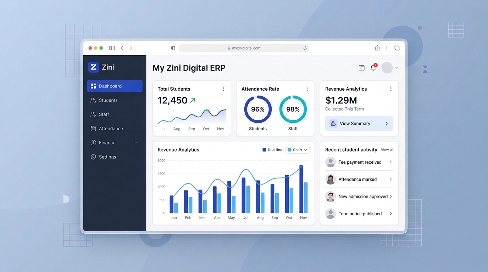
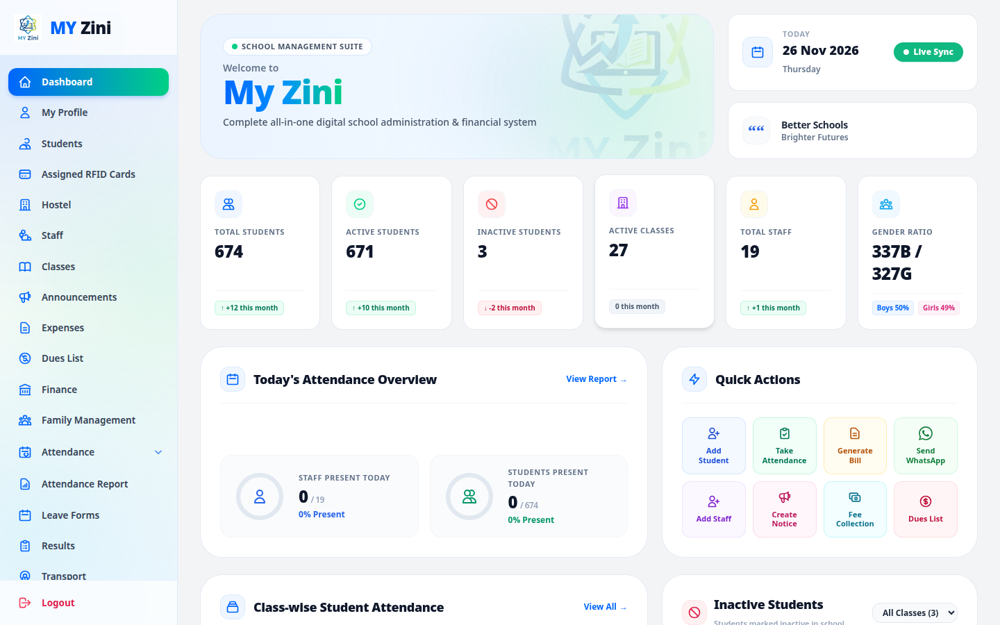
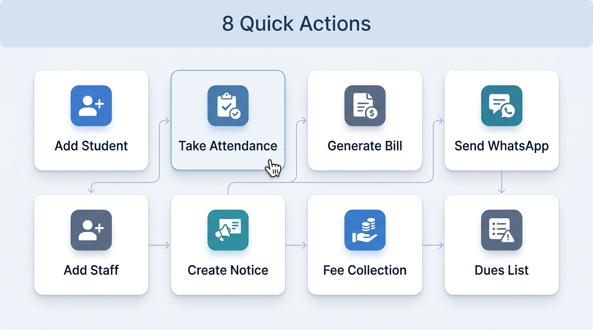
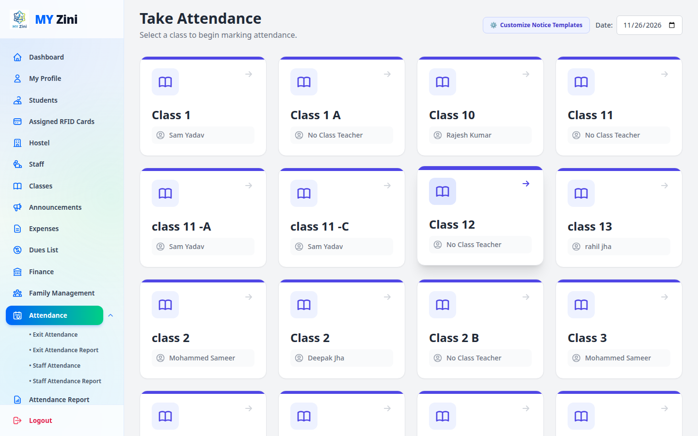
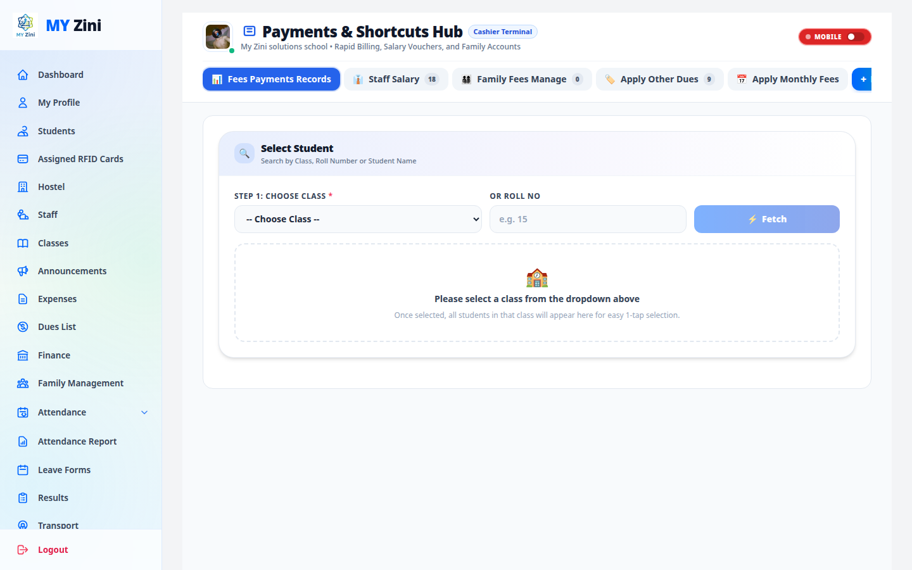
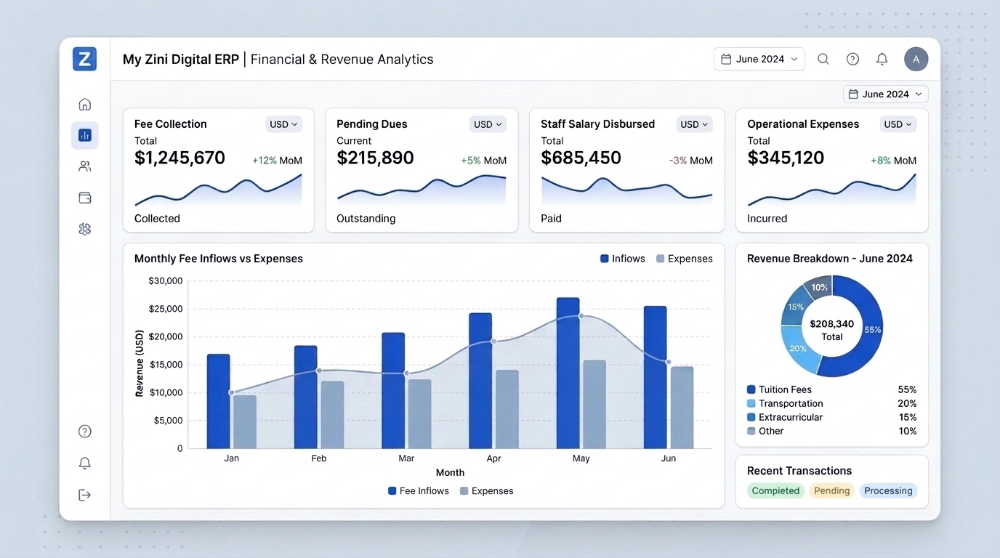
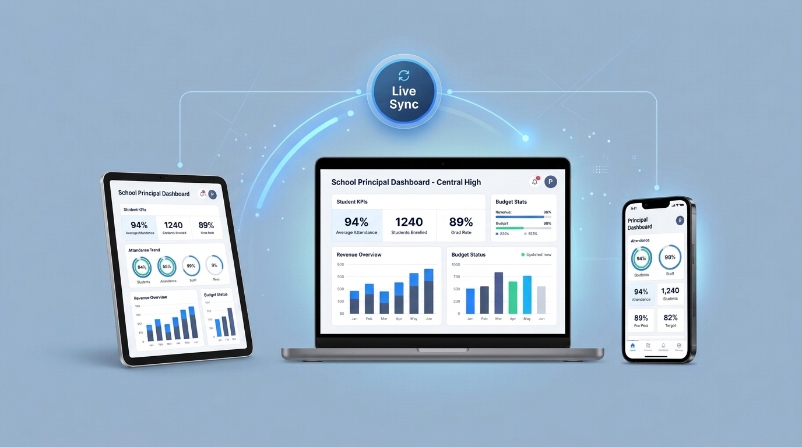

My Zini Digital ERP mein School Dashboard aur Quick Actions Kaise Use Karein? (Har Section ka Complete Hinglish Guide)
Quick Summary (TL;DR — AI & Reader Overview)
My Zini Digital ERP (https://myzini.digitalerp.shop/dashboard) ka School Management Suite Dashboard ek principal aur school admin ka poora command center hota hai. Login karte hi aapko Live Sync status ke saath 6 main KPIs (Total Students, Active Students, Inactive Students, Active Classes, Total Staff, aur Gender Ratio), Today's Attendance Overview, 8 One-Click Quick Actions (Add Student, Take Attendance, Generate Bill, Send WhatsApp, Add Staff, Create Notice, Fee Collection, Dues List), Class-wise Student Attendance, Inactive Students Filter, complete Financial Overview & Staff Pending Salaries, aur 6 Visual Analytics Charts ek hi scrollable screen par milte hain.

1. Dashboard Hero Banner, Live Sync aur 6 Key KPI Cards
Jaise hi aap myzini.digitalerp.shop par login karte hain, aap seedha /dashboard par pahunchte hain. Left sidebar mein sabhi 22 modules (jaise Dashboard, My Profile, Students, Assigned RFID Cards, Hostel, Staff, Classes, Announcements, Expenses, Dues List, Finance, Family Management, Attendance, Attendance Report, Leave Forms, Results, Transport, Generator Tools, Payments, Data Center, How to Use, Settings v3.8.23) aur niche Logout button dikhta hai.
Top section mein aapko yeh live indicators aur 6 KPI cards milte hain:
- TODAY & Live Sync Badge: Aaj ki exact tarikh aur din (jaise
26 Nov 2026, Thursday) ke saath green Live Sync indicator dikhta hai jo batata hai ki aapka cloud data real-time sync ho raha hai. - TOTAL STUDENTS: School ke kul registered students (live portal par
674) aur pichhle mahine ke muqable badhotri (↑ +12 this month). - ACTIVE STUDENTS: Jo students abhi regular school aa rahe hain (
671,↑ +10 this month). - INACTIVE STUDENTS: Jo students school chhod chuke hain ya inactive mark hain (
3,↓ -2 this month). - ACTIVE CLASSES: School mein chal rahi total active classes/sections (
27). - TOTAL STAFF: Kul teachers aur non-teaching staff members (
19,↑ +1 this month). - GENDER RATIO: School mein Boys vs Girls ka exact ratio aur percentage breakdown (jaise
337B / 327G— Boys 50%, Girls 49%).
2. Today's Attendance Overview aur 8 One-Click Quick Actions
Thoda niche scroll karne par aapko rozana ke sabse zyada use hone wale do sections milte hain: Today's Attendance Overview aur Quick Actions.

- Today's Attendance Overview: Yahan do cards hote hain — STAFF PRESENT TODAY (e.g.
0/ 19,0% Present) aur STUDENTS PRESENT TODAY (e.g.0/ 674,0% Present). Right side mein View Report → button diya gaya hai jo aapko seedha detailed attendance report par le jata hai.

Quick Actions mein 8 shortcut buttons milte hain. Humne inhe live click karke verify kiya hai:
1. Add Student
Seedha naya student admission form open karne ke liye shortcut.
2. Take Attendance
Click karne par seedha /attendance page khulta hai jahan class-wise haziri lagti hai.
3. Generate Bill
Click karne par /shortcut quick billing & fee receipt tool open hota hai.
4. Send WhatsApp
Seedha web.whatsapp.com open karta hai taaki parents ko instant message bheja ja sake.
5. Add Staff
Naye teacher ya staff member ko school roster mein jodne ke liye shortcut.
6. Create Notice
Holiday, exam ya PTM ka naya announcement turant publish karne ke liye.
7. Fee Collection
Monthly ya annual school fees jama karne ke screen par jaane ke liye.
8. Dues List
Pending fees wale sabhi students ki list turant dekhne ke liye.

/attendance screen.
/shortcut billing screen.3. Class-wise Student Attendance Grid
Quick Actions ke niche aapko Class-wise Student Attendance grid dikhta hai, jiske top-right mein View All → button hota hai. Yahan Play, Nursery, Nursery B, LKG, Prep, UKG, Class 1, Class 2, Class 3, Class 4, Class 5, Class 6, Class 7, Class 8, Class 9, Class 10, Class 11, Class 12, Class XII, Class 13, aur Graduation tak har ek class ka alag card hota hai.
Principal ek hi nazar mein dekh sakte hain ki kis class mein kitne bacche present hain aur kis teacher ne abhi tak attendance mark nahi ki hai (0% Present).
4. Inactive Students Section aur Class Filter Tabs
Agar kuch students ne school chhoda hai ya lambe samay se absent hone ke karan inactive mark kiye gaye hain, toh unhe alag se dhoondhne ki zaroorat nahi padti. Dashboard par hi Inactive Students ("Students marked inactive in school") section milta hai.
- Class Filter Pills: Top par All Classes (3), Class 1, LKG, aur Nursery jaise filter buttons hote hain. Humne live test mein
LKGclick kiya aur turant Aarav Kumar (Roll: 11, LKG, Inactive) filter hokar aa gaya. - Direct Phone Call Link: Har inactive student card par uska Roll Number, Class, Inactive badge, aur clickable phone icon (
📞 9801234803/📞 9241981083) hota hai jisse follow-up call turant ho sake.
5. Financial Overview, School Revenue aur Staff Pending Salaries
School management mein sabse bada dard hota hai hisaab-kitab aur pending fees/salary track karna. My Zini Dashboard ka Financial Overview & School Revenue ("Complete accounting and fee collections summary") section aapko poora financial health ek screen par dikhata hai:

- Collection Efficiency Badge: Top-right mein
Efficiency: 1.78%badge dikhta hai jo collected vs total due ratio batata hai. - 4 Main Financial Cards:
- TOTAL SCHOOL REVENUE:
₹1,28,815(All Months Paid Fees) - TOTAL OUTSTANDING DUES:
₹71,03,611(All Months Pending Fees) - STAFF SALARY DISBURSED:
₹3,88,054(Paid to Employees) - OPERATIONAL EXPENSES:
₹74,573(Other School Expenses)
- TOTAL SCHOOL REVENUE:
- Extra Accounting Strip: Niche 4 detailed counters milte hain — Other Fees Paid (
₹35,406), Previous Dues (₹20,000), Previous Dues Collected (₹1,774), aur Staff Pending Dues (₹14,51,114). - STAFF MEMBERS WITH PENDING BALANCES: Iske niche
16staff members ki individual pending salary cards dikhti hain (jaise Rajesh Kumar ₹1,69,500, Priya Singh ₹1,54,000, etc.) taaki salary payout mein kabhi confusion na ho.
6. 6 Visual Analytics Charts (Trends & Growth Insights)
Dashboard ke sabse niche 6 interactive charts milte hain jo school owner ko data-driven decisions lene mein madad karte hain:
- Yearly Revenue Trends (Month over Month): Har mahine kitni fee collection hui uska comparison graph.
- Class-wise Revenue Flow (Current Month): Kis class se is mahine sabse zyada fees aayi.
- Gender Distribution (Per Class Breakdown): Har class mein Boys vs Girls ratio chart.
- Class-wise Active & Inactive Students (Activity Distribution): Har class mein active aur left students ka visual bar.
- Admissions Velocity (Current Month New Admissions): Is mahine naye admissions ki speed.
- Category Diversity: Students ke category distribution ka breakdown.
7. Mobile, Tablet aur Laptop par Responsive Dashboard & Live Sync

Chahe aap school office ke Laptop par baithe hon, classroom mein Tablet use kar rahe hon, ya ghar se Mobile phone par check kar rahe hon — My Zini ERP ka Dashboard har screen ke hisab se adjust ho jata hai. Sidebar mein ek dedicated Mobile button bhi diya gaya hai jisse aap compact mobile-app layout par switch kar sakte hain.
8. School Principal & Accountant ka Daily Workflow (Dashboard Use Case)
Bahut se school owners puchte hain ki rozana subah school aate hi My Zini Dashboard ko kaise use karein taaki 10 minute mein poore school ka control haath mein aa jaye. Niche ek practical daily routine diya gaya hai:
- Subah 9:00 AM — Attendance & Staff Check: Sabse pehle Dashboard kholkar Today's Attendance Overview mein STAFF PRESENT TODAY aur STUDENTS PRESENT TODAY dekhein. Agar kisi class mein
0% Presentdikh raha hai, toh turant us class teacher ko yaad dilayein ya Take Attendance Quick Action par click karke khud attendance mark karein. - Dopahar 12:00 PM — Fee Collection, Billing & WhatsApp Reminders: Accounts counter par Generate Bill (
/shortcut) aur Fee Collection buttons use karke parents ko turant fee receipt dein. Agar kisi student par pichhle mahine ka baki hai, toh Dues List kholkar aur Send WhatsApp button dabakar parents ko polite fee reminder bhej dein. - Dopahar 2:00 PM — Inactive Students & Admissions Velocity: Inactive Students section mein class filter (jaise Nursery, LKG, Class 1) lagakar un bacchon ke parents ko direct
📞button se call karein jo pichhle kuch dino se school nahi aa rahe hain. Saath hi niche Admissions Velocity chart mein dekhein ki is mahine kitne naye admissions hue hain. - Shaam 4:00 PM — Financial Overview & Staff Pending Salaries: School band hone se pehle Financial Overview & School Revenue section check karein. Aaj kitna Total School Revenue aaya, kitne Operational Expenses kharch hue, aur Staff Members with Pending Balances mein kis teacher ki kitni salary baki hai — yeh sab bina kisi register ke ek hi page par mil jata hai.
Left Sidebar ke Sabhi 22 Modules ek Nazar Mein
Dashboard ke left sidebar mein aapko My Zini Digital ERP ke sabhi core modules ka seedha access milta hai: Dashboard (/dashboard), My Profile (/profile), Students (/students), Assigned RFID Cards (/assigned-rfid-cards), Hostel (/hostel), Staff (/staff), Classes (/classes), Announcements (/announcements), Expenses (/expenses), Dues List (/dues-list), Finance (/finance), Family Management (/family-management), Attendance, Attendance Report (/attendance-report), Leave Forms (/leave-management), Results (/results), Transport (/transport), Generator Tools (/generator-tools), Payments, Data Center (/data-center), How to Use (/how-to-use), aur Settings v3.8.23 (/settings). Sabse niche Logout button aur Mobile view switcher bhi maujood hai.
9. Dashboard Pro Tips & Common Sawalon ke Jawab
- Morning mein 0% Present kyun dikhta hai? Jab tak teachers ya admin us din ki attendance submit nahi karte, Today's Attendance Overview aur Class-wise Student Attendance cards par
0/674 (0% Present)dikhta hai. Jaise hi pehli class ki attendance Take Attendance se save hoti hai, Live Sync ke saath percentage turant update ho jata hai. - Previous Dues vs Total Outstanding Dues kaise samjhein? Total Outstanding Dues (jaise
₹71,03,611) mein sabhi mahino ki pending tuition aur other fees shamil hoti hain, jabki Previous Dues (₹20,000) aur Previous Dues Collected (₹1,774) pichhle academic session ke baki hisaab ko alag se track karne mein madad karte hain. - Staff Pending Balances ko zero kaise rakhein? Har mahine salary distribute karne ke baad Staff module mein payment entry zaroor update karein, taaki Dashboard par STAFF SALARY DISBURSED aur Staff Members with Pending Balances ka data 100% accurate rahe.
- Mobile par Fast Access: Agar aap field ya classroom mein phone use kar rahe hain, toh top-left sidebar toggle ya Mobile button se mobile-optimized layout open karein — har chart aur Quick Action button touch screen ke liye bilkul smooth kaam karta hai.
- Settings & Version Check: Left sidebar ke niche dikhne wala Settings v3.8.23 aapko batata hai ki aapka school hamesha latest My Zini Digital ERP build par chal raha hai, jahan se aap school name, logo, session aur academic rules customize kar sakte hain.
10. Quick Reference Table (Dashboard Sections & Routes)
| Dashboard Section / Button | Route / Link | Main Use |
|---|---|---|
| 6 KPI Cards | /dashboard | Total/Active/Inactive Students, Classes, Staff, Gender Ratio |
| Take Attendance | /attendance | 1-click class-wise daily student attendance |
| Generate Bill | /shortcut | Quick fee receipt & bill generation |
| View Report → | /attendance-report | Detailed staff & student attendance analytics |
| Send WhatsApp | web.whatsapp.com | Parents ko direct WhatsApp alert/notice bhejna |
| Financial Overview | /dashboard | Revenue, Outstanding Dues, Salary Disbursed, Expenses |
Frequently Asked Questions (FAQs)
1. Dashboard par kaun-kaun se 8 Quick Actions milte hain?
Dashboard par aapko Add Student, Take Attendance, Generate Bill, Send WhatsApp, Add Staff, Create Notice, Fee Collection, aur Dues List — yeh 8 shortcut buttons milte hain.
2. Kya Dashboard se hi kisi inactive student ke parents ko call kar sakte hain?
Haan, Inactive Students section mein class filter (jaise LKG, Nursery, Class 1) chunein aur student card par diye gaye 📞 phone link par click karke seedha call kar sakte hain.
3. Financial Overview mein Efficiency percentage ka kya matlab hai?
Efficiency % batata hai ki aapke school ki kul expected fees mein se kitne pratishat fees abhi tak collect ho chuki hai, saath hi Total Revenue aur Total Outstanding Dues bhi dikhte hain.
4. Staff Members with Pending Balances list kaise help karti hai?
Yeh list har teacher/staff member ka pending salary balance ek jagah dikhati hai taaki admin bina manual register check kiye sahi salary payout kar sake.
5. Apne school ke liye My Zini Digital ERP kaise start karein?
Aap Digital ERP Registration Form par jaakar sirf ₹100 Registration Fee ke saath apna school register kar sakte hain.
6. Live Sync badge ka kya matlab hota hai?
Dashboard ke top-right par dikhne wala green Live Sync badge batata hai ki aapke school ka student, attendance aur fee data real-time cloud server se synced hai. Agar teacher apne mobile se attendance lagate hain, toh principal ke laptop dashboard par turant update dikhta hai.
7. Generate Bill aur Fee Collection Quick Actions mein kya antar hai?
Generate Bill (/shortcut) ek super-fast billing & quick receipt tool open karta hai jisse counter par turant slip print ho sake, jabki Fee Collection poore Finance & Fee Management module ko open karta hai jahan aap monthly/annual ledger aur history dekh sakte hain.
8. Kya Dashboard par boys aur girls ka alag-alag count dikhta hai?
Haan! Top KPI cards mein GENDER RATIO card exact boys vs girls count aur percentage (jaise 337B / 327G — Boys 50%, Girls 49%) dikhata hai, aur niche Gender Distribution (Per Class Breakdown) chart mein har class ka alag graph bhi milta hai.
Apne School ka Smart Dashboard Aaj Hi Shuru Karein!
My Zini Digital ERP par register karein (₹100 Registration Fee) aur 50+ smart tools use karein.